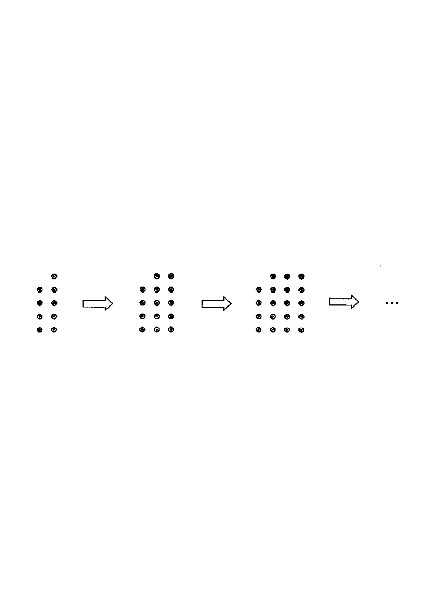

Step 1: T(1) = 9 dots — the 1st pattern.
[2016MC#14] In the figure, the 1st pattern consists of 9 dots. For any positive integer $n$, the $(n+1)$th pattern is formed by adding 5 dots to the $n$th pattern. Find the number of dots in the 7th pattern.

Let $T(m)$ be the number of dots in the $m$th pattern.
The first pattern gives
$$T(1)=9,$$
and each next pattern adds 5 dots,
so for every positive integer $n$
$$T(n+1)=T(n)+5.$$
Hint: this is an arithmetic sequence with first term 9 and common difference 5 — but we can also just count the additions.
Starting at $T(1)=9$ and adding 5 each time:
$$ \begin{aligned} T(2)&=T(1)+5\\ T(3)&=T(2)+5\\ &\;\;\vdots\\ T(7)&=T(6)+5 \end{aligned} $$
Hint: from $T(1)$ to $T(7)$ there are exactly $7-1=6$ additions of 5.
$$T(7)=T(6)+5=T(5)+5+5=\cdots=T(1)+\underbrace{5+5+5+5+5+5}_{6\ \text{fives}}$$
Hint: each substitution peels off one more "+5";
watch the screen highlight the extra dots in each successive pattern.
$$T(7)=9+5+5+5+5+5+5=9+30=39.$$
Hint: $6\times 5 = 30$, then $9+30=39$. Alternatively, the general term is $T(m)=9+5(m-1)$.
$T(m)=9+5(m-1)$ gives $T(7)=9+5(6)=9+30=39$, matching Step 4.
The 7th pattern is $39$ dots, so the answer is C.
Hint: a quick sanity check — options are 29,
34, 39, 44;
only 39 fits "add 5 six times to 9".
Question. In a sequence of patterns, the 1st pattern consists of \(12\) dots and for any positive integer \(n\) the \((n+1)\)th pattern is formed by adding \(7\) dots to the \(n\)th pattern. Find the number of dots in the 9th pattern. A. \(61\) B. \(68\) C. \(75\) D. \(82\) [1 mark]